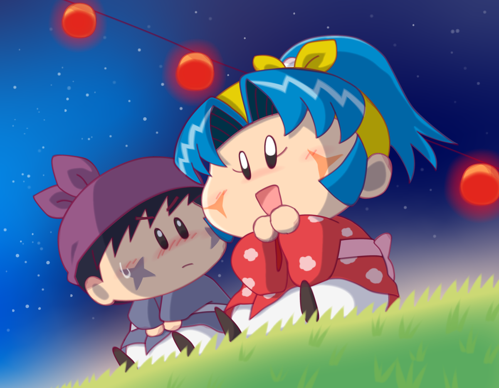
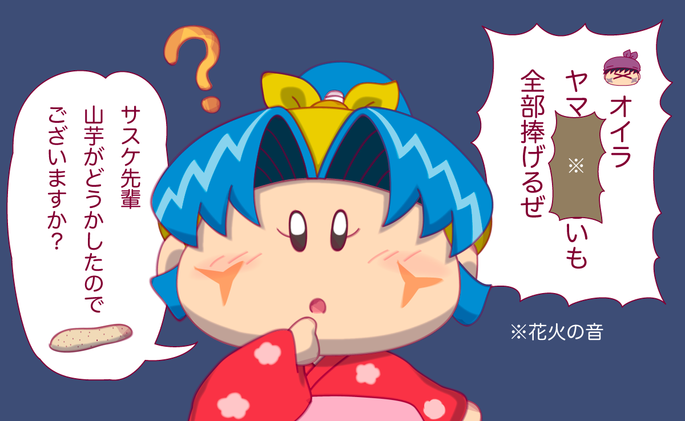

夏の日の夜。夏祭りに出かけた妖精忍者たちでしたが、ヤシチとハンゾーは花火を近くから見ると言い出し、気がつけばヤマネとサスケは二人きりに・・。夏祭りの特別な雰囲気の中、もしかしたらオイラの想いがヤマネに届くかもしれないと思ったサスケは、緊張を堪えながらヤマネの方を向き・・。

サスケ「オイラ、ヤマネへの想いも全部捧げるぜ」

この展開は、TwitterにてNewNes(@okakureha)さんからいただきました。ありがとうございます〜。
決意むなしく、花火の音でセリフの大事な部分をかき消されてしまうところがサスケくんらしいですよね。またその直後にヤマネの口からぽろっと「ヤシチあにさま・・」と発せられたりすると、サスケは一気に現実に戻されたりしそう・・。
絵の補足ですが、最近M2という最新のCPUを搭載したMacbook Airを購入したところ、Illustratorがさくさく動くことにめちゃくちゃ感動しました。ということでIllustratorの効果を今まで以上に使っています（今までの絵と大差ないじゃんというツッコミが聞こえそうですが、それは私の画力の問題です💦） Illustratorの効果を使用すると手描きの雰囲気をより出せるので、今後はこの描き方が私の標準になりそうです。
(2022/8/18)